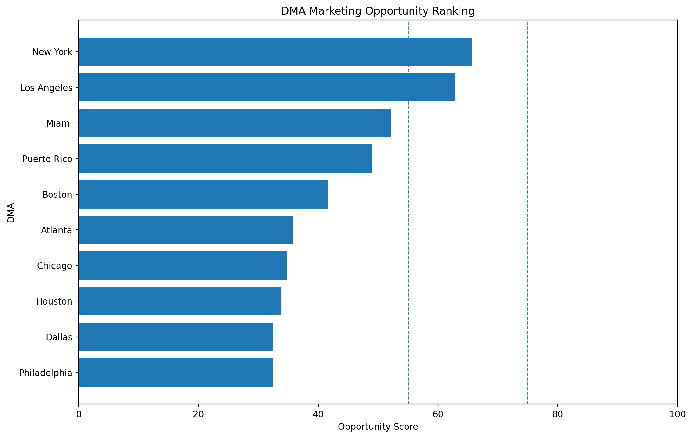
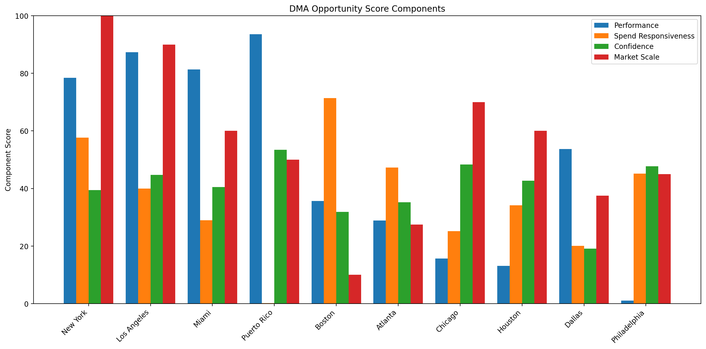
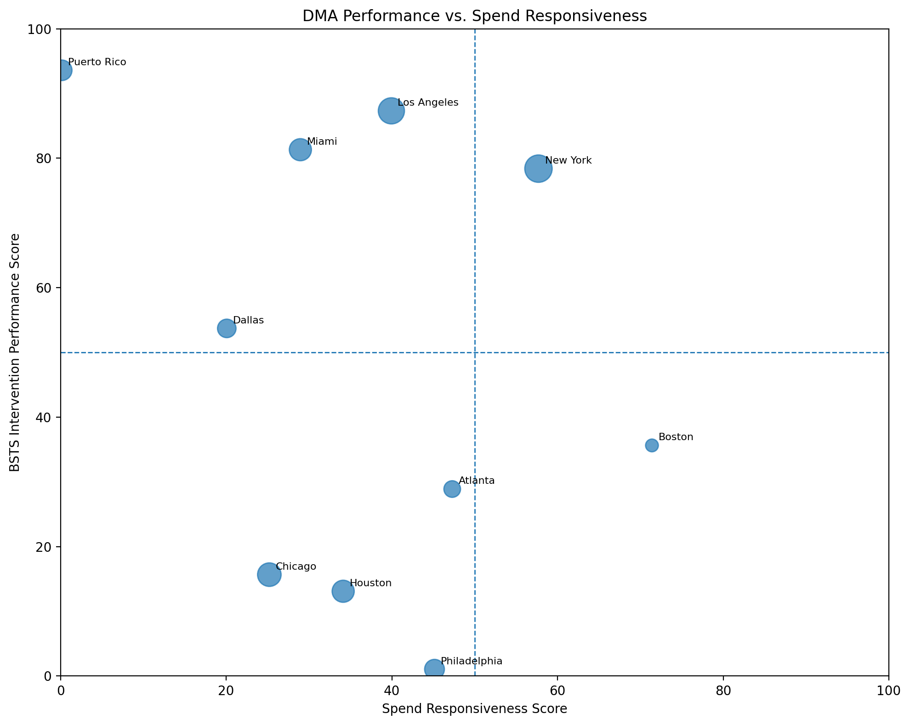

The opportunity score combines four distinct dimensions: intervention-period performance, spend responsiveness, model confidence, and market scale.

The component view illustrates why markets with similar BSTS results may receive different opportunity rankings. A strong counterfactual result alone is insufficient if spend responsiveness, confidence, or commercial scale is limited.

The vertical axis reflects intervention-period performance relative to the BSTS counterfactual. The horizontal axis reflects evidence that marketing spend explains traffic variation within each DMA. Marker size reflects relative market scale.

Markets listed below meet the current analytical criteria for either a controlled incremental investment test or scaling. Suggested ranges are testing parameters rather than model-estimated optimal budgets.
| DMA | Opportunity_Score | Confidence_Score | Strategic_Action | Recent_Average_Spend | Recommended_Incremental_Spend_Lower | Recommended_Incremental_Spend_Upper |
|---|---|---|---|---|---|---|
| New York, NY | 65.7 | 39.4 | Test Increase | 532,000.0 | 26,600.0 | 79,800.0 |
| Los Angeles, CA | 62.9 | 44.7 | Test Increase | 520,666.7 | 26,033.3 | 78,100.0 |
Combined suggested incremental monthly testing range: $52,633 to $157,900 .
These markets show some favorable evidence but do not currently meet the analytical threshold for incremental investment testing.
| DMA | Opportunity_Score | Evidence_Alignment | Strategic_Action |
|---|---|---|---|
| Miami-Ft. Lauderdale, FL | 52.2 | Convergent Positive | Maintain / Optimize |
A diagnostic classification does not imply that incremental marketing spend caused underperformance. In many cases, BSTS intervention-period performance conflicts with a positive historical spend-response relationship. These markets warrant investigation before changing allocation solely on the basis of the counterfactual estimate.
| DMA | BSTS_Relative_Lift | Implied_Incremental_Comp | Spend_Partial_R2 | Spend_Beta | Evidence_Alignment |
|---|---|---|---|---|---|
| Puerto Rico | 0.097 | 0.091 | 0.004 | -0.003 | Positive BSTS / Spend Uninformative |
| Boston, MA (Manchester, NH) | -0.025 | -0.025 | 0.357 | 0.039 | Attribution Conflict |
| Atlanta, GA | -0.036 | -0.038 | 0.236 | 0.032 | Attribution Conflict |
| Chicago, IL | -0.069 | -0.074 | 0.126 | 0.028 | Attribution Conflict |
| Houston, TX | -0.070 | -0.072 | 0.171 | 0.029 | Attribution Conflict |
| Dallas-Ft. Worth, TX | 0.008 | 0.008 | 0.100 | 0.022 | Convergent Positive |
| Philadelphia, PA | -0.121 | -0.137 | 0.226 | 0.031 | Attribution Conflict |
| Opportunity_Rank | DMA | BSTS Lift (%) | Probability Positive (%) | Implied Incremental Comp (p.p.) | Spend Partial R² (%) | Spend Beta | Performance | Responsiveness | Confidence | Market Scale | Opportunity | Evidence Alignment | Opportunity Tier | Model Recommendation | Suggested Spend Test | Recent_Average_Spend | Recommended_Incremental_Spend_Lower | Recommended_Incremental_Spend_Upper | Management_Interpretation |
|---|---|---|---|---|---|---|---|---|---|---|---|---|---|---|---|---|---|---|---|
| 1 | New York, NY | 5.4 | 81.4 | 5.1 | 28.9 | 0.0 | 78.4 | 57.7 | 39.4 | 100.0 | 65.7 | Convergent Positive | Moderate | Test Increase | +5% to +15% | 532000.0 | 26600.0 | 79800.0 | BSTS intervention performance and DMA spend-response evidence are directionally positive. The market is a candidate for controlled incremental investment testing. |
| 2 | Los Angeles, CA | 7.0 | 91.9 | 6.5 | 20.0 | 0.0 | 87.3 | 39.9 | 44.7 | 90.0 | 62.9 | Convergent Positive | Moderate | Test Increase | +5% to +15% | 520666.7 | 26033.3 | 78100.0 | BSTS intervention performance and DMA spend-response evidence are directionally positive. The market is a candidate for controlled incremental investment testing. |
| 3 | Miami-Ft. Lauderdale, FL | 6.4 | 83.5 | 5.8 | 14.5 | 0.0 | 81.3 | 29.0 | 40.5 | 60.0 | 52.2 | Convergent Positive | Low | Maintain / Optimize | -5% to +5% | 183333.3 | -9166.7 | 9166.7 | BSTS and spend-response evidence are directionally positive, but overall evidence strength supports maintaining or optimizing investment rather than increasing it. |
| 4 | Puerto Rico | 9.7 | 91.8 | 9.1 | 0.4 | -0.0 | 93.6 | 0.1 | 53.4 | 50.0 | 49.0 | Positive BSTS / Spend Uninformative | Low | Hold & Diagnose | Hold | 83666.7 | 0.0 | 0.0 | Intervention-period performance is positive, but spend explains little DMA traffic variation. The positive outcome cannot be confidently attributed to spend magnitude. |
| 5 | Boston, MA (Manchester, NH) | -2.5 | 33.8 | -2.5 | 35.7 | 0.0 | 35.6 | 71.4 | 31.9 | 10.0 | 41.6 | Attribution Conflict | Diagnostic | Hold & Diagnose | Hold | 142666.7 | 0.0 | 0.0 | Intervention-period performance and the DMA spend-response relationship point in different directions. The BSTS counterfactual gap should not be attributed directly to incremental spend without additional diagnosis. |
| 6 | Atlanta, GA | -3.6 | 27.0 | -3.8 | 23.6 | 0.0 | 28.9 | 47.3 | 35.2 | 27.5 | 35.8 | Attribution Conflict | Diagnostic | Hold & Diagnose | Hold | 184000.0 | 0.0 | 0.0 | Intervention-period performance and the DMA spend-response relationship point in different directions. The BSTS counterfactual gap should not be attributed directly to incremental spend without additional diagnosis. |
| 7 | Chicago, IL | -6.9 | 18.3 | -7.4 | 12.6 | 0.0 | 15.7 | 25.2 | 48.3 | 70.0 | 34.8 | Attribution Conflict | Diagnostic | Hold & Diagnose | Hold | 292333.3 | 0.0 | 0.0 | Intervention-period performance and the DMA spend-response relationship point in different directions. The BSTS counterfactual gap should not be attributed directly to incremental spend without additional diagnosis. |
| 8 | Houston, TX | -7.0 | 12.1 | -7.2 | 17.1 | 0.0 | 13.1 | 34.1 | 42.7 | 60.0 | 33.8 | Attribution Conflict | Diagnostic | Hold & Diagnose | Hold | 208000.0 | 0.0 | 0.0 | Intervention-period performance and the DMA spend-response relationship point in different directions. The BSTS counterfactual gap should not be attributed directly to incremental spend without additional diagnosis. |
| 9 | Dallas-Ft. Worth, TX | 0.8 | 53.3 | 0.8 | 10.0 | 0.0 | 53.7 | 20.1 | 19.2 | 37.5 | 32.5 | Convergent Positive | Low | Hold & Diagnose | Hold | 236000.0 | 0.0 | 0.0 | BSTS and spend-response evidence are directionally positive, but overall evidence strength supports maintaining or optimizing investment rather than increasing it. |
| 10 | Philadelphia, PA | -12.1 | 2.1 | -13.7 | 22.6 | 0.0 | 1.1 | 45.1 | 47.7 | 45.0 | 32.5 | Attribution Conflict | Diagnostic | Hold & Diagnose | Hold | 177333.3 | 0.0 | 0.0 | Intervention-period performance and the DMA spend-response relationship point in different directions. The BSTS counterfactual gap should not be attributed directly to incremental spend without additional diagnosis. |
BSTS intervention performance: Measures whether observed traffic performed above or below the estimated no-intervention counterfactual. The result is an intervention-period performance estimate and should not automatically be interpreted as the direct effect of marketing spend alone.
Spend responsiveness: Measures the incremental explanatory contribution and direction of marketing spend within the DMA-level regression. Spend Partial R² is an explanatory-power statistic and is not an ROI measure.
Confidence: Reflects the strength and robustness of the underlying evidence, including BSTS directional probability and DMA regression stability.
Market scale: Accounts for relative traffic volume and store footprint so that commercial upside is considered without allowing the largest DMAs to dominate the ranking solely because of size.
Opportunity score: Combines the four dimensions into a transparent decision-support metric. It is not itself a causal estimate.
Suggested spend ranges: Represent controlled testing ranges intended to generate additional evidence. They should not be interpreted as statistically optimized budget levels.